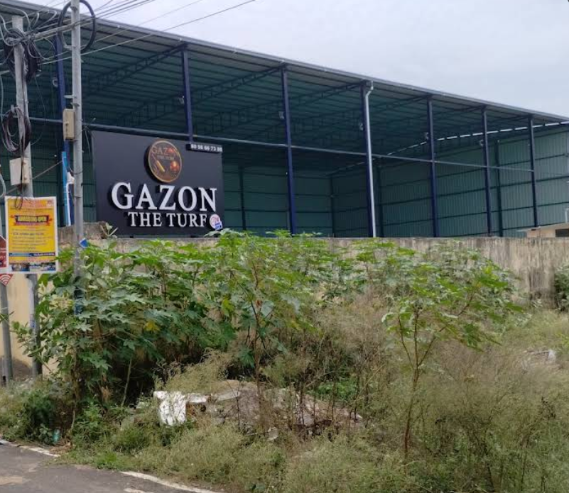

Gazon_turf
GAZON the turf is a sports turf facility located in Paruthippattu (near Sriram Nagar, Avadi) in Chennai.
It's an all-weather synthetic turf ground where people can play games like football and box cricket,
and it offers basic amenities such as parking, restrooms, drinking water, CCTV, Wi-Fi, resting space, and first aid.
The venue is open 24/7 and can be booked for casual play or group matches
